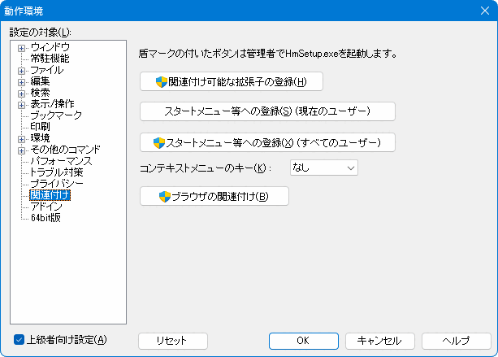
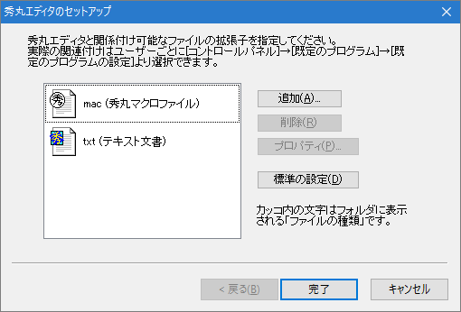
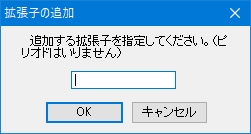
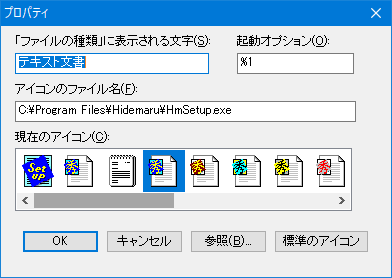
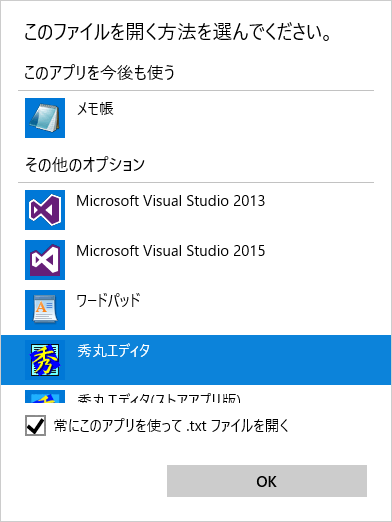

[HME0052A]
●テキストファイルは常に秀丸で開きたい

- エクスプローラなどでテキストファイルをダブルクリックしてもメモ帳が起動してしまいます。秀丸エディタで開くようにしたいのですが？

-
「その他」 → 「動作環境」でダイアログを開き、「設定の対象」から「関連付け」を選択すると、「関連付け可能な拡張子の登録」ボタンがあります。(持ち出しキット使用時は、各ボタンは無効化され使用不可)

「関連付け可能な拡張子の登録」ボタンを押すと、「HmSetup.exe」が起動します。 (秀丸エディタ本体と同じ場所にある「HmSetup.exe」を直接実行しない事)

「追加」を選択し、関連付けたい拡張子を入力します。

項目を選択し、「プロパティ」で、アイコン等の変更ができます。

「完了」を押せば、指定した拡張子と秀丸エディタが関連付けられます。
- [補足]
-
Windows10の場合は注意が必要です。基本的にはユーザーが既定のプログラムを設定する必要があります。 (「動作環境」→「関連づけ」等を実行すると、「プログラムの候補一覧」に表示されるだけ)
「Windowsの設定」→「アプリ」→「既定のアプリ」で設定/変更が可能です。「ファイルの種類ごとに規定のアプリを選ぶ」から、拡張子毎に設定可能です。
また、対象のファイルを選択し、右クリックメニューの「プログラムから開く」から表示される一覧から選択することも出来ます。「別のプログラムを選択」を選ぶと、「常にこのアプリを使って〜を開く」を指定することも可能です。
